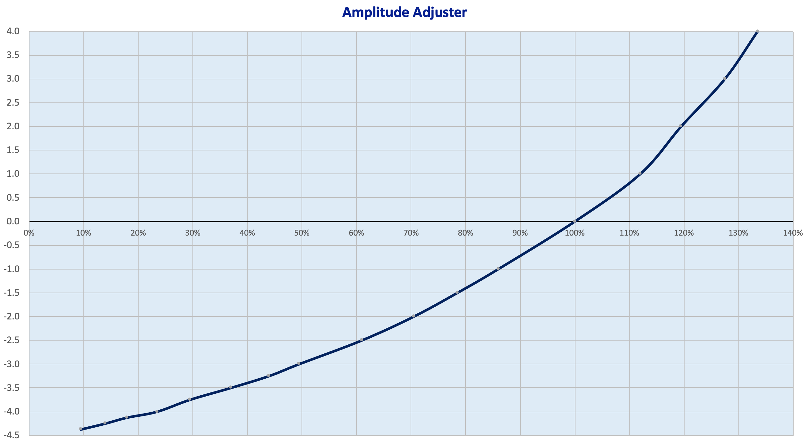

|
|

|
Amplitude Adjuster |
Overview
Amplitude Adjuster Terminology A rosette's amplitude is the measure of the movement that the rosette imparts upon the spindle. At times, that amplitude may be too great or too small for what the artist wants to achieve. These include:
An Amplitude Adjuster is used to reduce or increase the amplitude of the Rosette. (Reducing the amplitude is the most common use; it is rare to increase it.) So, the amplitude adjuster extends the capabilities for a given rosette. For example, if you use an amplitude adjuster, then you will not have to buy a new 24-lobe rosette with a different amplitude for each operation, when you only want to adjust the amplitude.
| |
Examples of this device in useThe amplitude adjuster I made for my MDF rose engine lathe is outlined on this web page link. The video below shows it in action. The amplitude adjuster which Al Collins implemented on the MADE lathe, is a horizontal amplitude adjuster (using a design from Fred Armbruster). The video on that web page shows well how this works. | |
Usage NotesThere are two types of amplitude adjusters : horizontal and vertical. The horizontal one is simpler, but cannot be easily implemented on an MDF Rose Engine due to space constraints, among other reasons. The concepts below apply to that one.

Amplitude Adjustment The chart to the right shows the effects Tom Johanson measured on his vertical amplitude adjuster.
Tom's amplitude adjuster is based on a slightly different design than the one I built, but the curve is the same. You can notice that the amplitude adjustment is not a straight line; rather, it is curved. 
The math used to calculate amplitude adjustment is below if you want to understand it. If you do not want to do the math, here is a calculator which I use to get me close enough. But, if you need to be very accurate, use a Dial Indicator to set the desired amplitude. | |
How it works
An amplitude adjuster is a lever. By adjusting the pivot point (fulcrum), the effect of the rosette is amplified (usually in a negative way). The calculation for how the length of each of these segments of the lever's arms changes the movement is : \begin{align*} RubberDistanceDown &= \left(\frac{ HeadStockLeverArmLength \cdot AALeverArmLength \cdot \left(1 - AA\% \right)} { HeadStockLeverArmLength - \left( AALeverArmLength \cdot AA\% \right) } \right) \end{align*} or \begin{align*} AA\% &= \left(\frac{ HeadStockLeverArmLength \cdot \left( AALeverArmLength - RubberDistanceDown \right)} { AALeverArmLength \cdot \left( HeadStockLeverArmLength - RubberDistanceDown \right) } \right) \cdot 100\% \end{align*} | |
More InformationPublished Articles
|
Formulas are displayed on this page using MathJax.